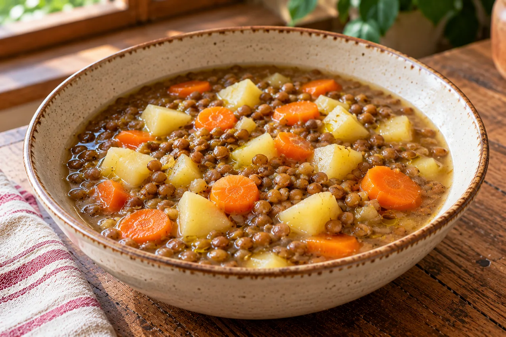

RUBRICA 08 · RICETTA ORIGINALE 02 · 23 OTTOBRE 2026
Zuppa di lenticchie, patate e carote
Una zuppa semplice d'ispirazione mediterranea, con ingredienti economici comuni e peso degli alimenti già cotti. È una ricetta originale di Per Me, non una preparazione regionale tradizionale certificata.

Valori stimati per UNA porzione (metà della zuppa)
40,0 g di carboidrati disponibili
298 kcal circa
Due porzioni totali. Calcolo da quattro tabelle ufficiali CREA, usando gli ingredienti misurati dopo la cottura; numeri indicativi e non analisi di laboratorio.
Ingredienti per 2 porzioni
- 240 g di lenticchie da secche, già cotte in acqua senza sale e scolate. Non 240 g di lenticchie secche.
- 180 g di patate pelate, già bollite in acqua senza sale.
- 120 g di carote già bollite in acqua senza sale e scolate.
- 16 g di olio extravergine di oliva, pesati con bilancia.
- Acqua di cottura potabile quanto basta per la consistenza della zuppa: apporto energetico nullo. Per rispettare il calcolo, non sono inclusi brodo di carne, dado, pane, formaggio, sale o altri ingredienti.
Preparazione, senza errori nei pesi
- Parti dalle lenticchie secche: controlla e segui le istruzioni del prodotto per selezione, risciacquo, eventuale ammollo e cottura. Cuoci in acqua senza sale finché sono morbide e scolale. Pesane 240 g già cotte.
- Pela e lessa le patate fino a consistenza morbida: pesane 180 g già bollite e tagliale a cubetti.
- Pulisci e lessa le carote; scolale, pesane 120 g già cotte e tagliale a rondelle.
- Riunisci lenticchie, patate e carote in una pentola con una quantità moderata di acqua. Scalda mescolando per pochi minuti, senza sfaldare completamente i pezzi.
- Spegni e incorpora esattamente 16 g di olio EVO. Suddividi il totale in due porzioni uguali; la densità della zuppa può variare con l'acqua, ma non i nutrienti introdotti da acqua semplice.
Non lasciare a lungo riso, legumi o altri cibi cotti a temperatura ambiente. Raffredda rapidamente ciò che non consumi, conserva in frigorifero secondo le buone pratiche e riscalda bene prima di servire. Scarta il prodotto se non puoi garantirne la corretta conservazione.
Calcolo controllabile, ingrediente per ingrediente
Formula per ciascun ingrediente: quantità in grammi × valore CREA per 100 g ÷ 100. Somma per la pentola intera; poi dividi per due. Per i carboidrati utilizziamo la voce CREA carboidrati disponibili, distinta dalla fibra.
| Alimento | Peso | kcal/100 g | Carboidrati disponibili/100 g | kcal nella ricetta | Carboidrati nella ricetta | Fonte |
|---|---|---|---|---|---|---|
| Lenticchie da secche, già bollite e scolate | 240 g | 109 | 16,3 g | 261,60 kcal | 39,12 g | CREA 004505 |
| Patate senza buccia, già bollite | 180 g | 74 | 16,9 g | 133,20 kcal | 30,42 g | CREA 006515 |
| Carote già bollite e scolate | 120 g | 47 | 8,7 g | 56,40 kcal | 10,44 g | CREA 005155 |
| Olio extravergine di oliva | 16 g | 899 | 0 g | 143,84 kcal | 0,00 g | CREA 009210 |
| Totale pentola | 2 porzioni | — | — | 595,04 | 79,98 g | Calcolo |
| Una porzione | ½ pentola | — | — | 298 kcal circa | 40,0 g | Stima CREA |
Limiti: le tabelle sono valori medi arrotondati. Varietà e contenuto d'acqua possono cambiare i numeri. Chi usa lenticchie in scatola oppure aggiunge brodo, verdure ulteriori, pane o formaggio deve rifare il calcolo. Il prezzo reale non è indicato perché nessun prezzo d'acquisto documentato è disponibile.
Questi 40,0 g di carboidrati sono un'informazione nutrizionale stimata, non un'indicazione per dosare l'insulina. Le quantità personali e le eventuali limitazioni di sale, potassio, liquidi e altri nutrienti dipendono dalla situazione clinica. La ricetta non sostituisce il piano del medico o del dietista.
Il costo corretto della porzione
Conserva prezzi e scontrini: per ogni ingrediente calcola prezzo della confezione ÷ grammi effettivamente utilizzabili × quantità usata, con attenzione al rapporto fra peso secco e cotto. Somma gli ingredienti e dividi per due porzioni. Non inseriamo prezzi inventati o presunti come se fossero offerte di oggi.
Fonti e limiti editoriali
Valori dalle schede ufficiali CREA `004505`, `006515`, `005155`, `009210`; composizione media, non analisi del piatto. Revisione documentale 23 ottobre 2026. Non è stata svolta una revisione dietistica indipendente della preparazione né una prova con lettori reali.
Vai alla pagina Facebook Per Me per scrivere
Non condividere pubblicamente referti o dati sanitari personali.